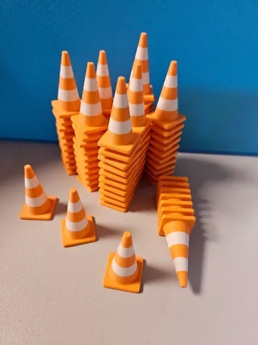
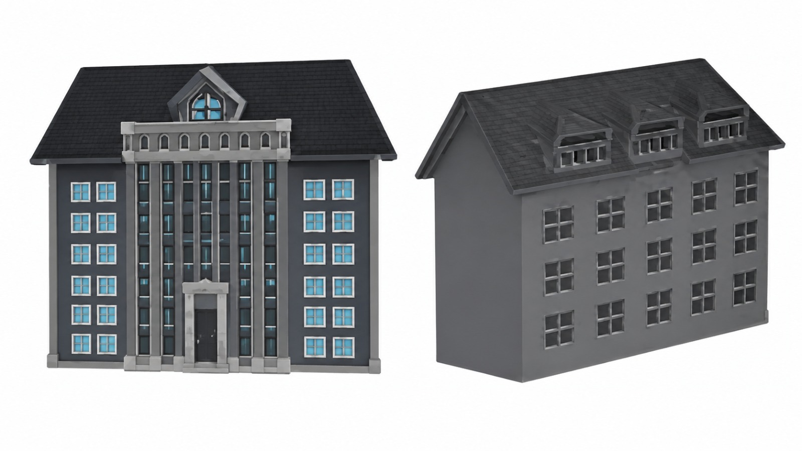

Comprá propiedades
Recorré barrios argentinos y armá tus grupos de color.
Salí de la vida del argentino promedio.
Comprá barrios, enfrentá la economía argentina y descubrí cómo una sola decisión puede cambiar tu suerte.
En PLAYGO todo puede cambiar de un turno a otro. Comprá, alquilá, negociá y tomá decisiones para llegar a ser el más rico.
Recorré barrios argentinos y armá tus grupos de color.
Sumá conos viales y hoteles para aumentar los alquileres.
Las cartas pueden darte una fortuna… o dejarte sin un peso.
Una tirada de demostración, sin iniciar una partida.
¡Hacé tu primera tirada!
Explorá el diseño original. Tocá la imagen para ampliarla y descubrir cada casillero.
Conocé las tarjetas de propiedad originales, sus alquileres, hipotecas y construcciones.
Elegí una carta para descubrir una situación inspirada en el juego. También podés explorar todas las láminas originales.
Tu suerte puede cambiar en cualquier momento.
Consultá el reglamento original, organizado por temas para encontrar cada regla fácilmente.
Para 2 a 6 jugadores
El objetivo de éste juego es obtener grandes beneficios comprando, alquilando o vendiendo propiedades dentro la situación económica actual de la Argentina, compitiendo con los demás, de tal forma que uno de los jugadores llegue a ser el más rico y por consiguiente el ganador. Se busca que los jugadores compitan entre sí, administren su dinero y progresen económicamente dentro del juego.
Su diseño permite de 2 a 6 jugadores por partida para que el entretenimiento, las estrategias, la competencia y las situaciones en relación a la vida económica de nuestro país, Argentina, se adueñen por completo de sus riquezas y percances. TODO puede cambiar en cualquier momento: un jugador puede pasar de la máxima riqueza a la crisis total (o viceversa), con tan solo UNA decisión.
Partiendo del casillero SALIDA, se mueven las fichas alrededor del tablero de acuerdo a la puntuación que se obtenga con los dados.
Cuando la ficha de un jugador llegue a un espacio que no tiene propietario, puede comprarlo al Banco. Si no lo hace, el banco vende este terreno en subasta al mejor oferente.
La finalidad de poseer los terrenos, es la de cobrar alquileres a los adversarios que se detengan en los mismos. Siempre buscando obtener el mayor progreso económico posible según las reglas del juego.
Los alquileres aumentan considerablemente con la construcción, primero de conos viales, y luego de hoteles, por esta razón es importante construir sobre dichos terrenos.
En caso que los jugadores necesiten dinero, pueden lograrlo hipotecando sus propiedades al Banco.
Si un jugador llega a un espacio "Beneficio" o "Mala Suerte", debe robar una carta y seguir sus instrucciones obligatoriamente, aunque estas lo perjudiquen o lo envíen a la cárcel.
1 Tablero - 2 Dados - 6 fichas metálicas - 32 conos viales - 10 hoteles - 15 Tarjetas Beneficio - 15 Tarjetas Mala Suerte - 48 Títulos de Propiedad - Billetes del Banco “Sálvese Quien Pueda” de diferentes valores
Se coloca el tablero sobre una mesa. Cada jugador elige una ficha que le servirá para recorrer el tablero durante todo el partido. También recibirá $300.000. El resto de los billetes los guardará el Banco al igual que los títulos de propiedad y las tarjetas, tanto "Beneficio" como "Mala Suerte".
Se nombrará a un jugador para que haga de Banquero. (Véase BANCO y BANQUERO en estas instrucciones).
Cada jugador recibe $300.000 dividido de la siguiente manera:
1 billete de $100.000
1 billete de $70.000
1 billete de $50.000
2 billetes de $20.000
3 billetes de $10.000
4 billetes de $2.000
2 billetes de $1.000
De esta manera, cada jugador recibe 14 billetes y tiene billetes chicos para pagar las tarjetas de propiedades, Beneficio o Mala Suerte y recibir vueltos.
El resto del dinero lo guardará el Banco.
Comenzando por el Banquero, cada jugador arroja los dados por turno. El que obtenga mayor puntaje inicia el juego. Luego de colocar su ficha en el casillero de SALIDA, arroja nuevamente los dados y adelanta su ficha en la dirección que señala la flecha, tantos casilleros como puntos indiquen los mismos. Finalizada la jugada cede el turno al jugador de la izquierda y así sucesivamente.
Las fichas permanecerán en los casilleros que han ocupado y seguirán avanzando a partir de dicho punto en el próximo turno de cada jugador.
En el mismo casillero pueden permanecer dos o más fichas a la vez. Según el casillero a la que llegue la ficha, el jugador tendrá derecho a comprar terrenos u otras propiedades, o se verá obligado a pagar alquileres (si la propiedad es de otro jugador), a pagar contribuciones del transporte público argentino, a robar una tarjeta "Beneficio" o "Mala Suerte", ir a la cárcel etc.
Si el jugador al arrojar los dados saca dobles (2 números iguales), adelantará su peón normalmente, es decir tantos espacios como puntos indiquen los dados, y al casillero que llegue será efectivo (es decir que el jugador quedará sujeto a los derechos o penalidades que correspondan a dicho casillero). Luego volverá a arrojar los dados y adelantará su ficha hasta un nuevo casillero que también será efectivo.
Pero si saca tres dobles seguidos, en vez de adelantar su ficha, deberá colocarla en el casillero "CARCEL" (véase CARCEL en estas instrucciones).
En el transcurso del juego, los jugadores darán varias vueltas alrededor del tablero. Cada vez que una ficha llegue a un casillero SALIDA o pase por ella, el Banquero deberá pagar al jugador la suma de $50.000, sin tener en cuenta si ha llegado a dicho casillero o pasado por el mismo como resultado del tiro de dados o por medio de una tarjeta "Beneficio" o "Mala Suerte".
Los $50.000 se pagarán UNA sola vez por cada vuelta dada al tablero.
No obstante, si un jugador pasa por el casillero SALIDA y llega a una de "Beneficio" o "Mala Suerte " y roba la tarjeta que dice "avance hasta la salida", recibe $50.000 por pasar por la SALIDA y otros $50.000 por volver a ella siguiendo las instrucciones de la tarjeta.
Cuando la ficha de un jugador llega a una propiedad sin dueño (es decir un terreno del cuál ningún jugador tiene el título de propiedad) ya sea por medio del tiro de los dados o por una tarjeta "Beneficio" o "Mala Suerte", el jugador tiene la opción de compra de dicha propiedad pagando al Banco el precio indicado en la misma, en el tablero de juego.
Si el jugador decide comprarla, paga al Banco dicho precio recibiendo el Título de Propiedad que lo acredita como dueño colocándolo delante suyo, cara arriba, con el fin de identificar que le corresponde.
Si por el contrario, el jugador no acepta la opción de compra, el Banquero pone inmediatamente a la venta esta propiedad en pública subasta, vendiéndola al mejor oferente, aceptando dinero en pago y entregando al comprador el Título de Propiedad correspondiente.
Todos los jugadores pueden intervenir en la subasta, incluso el jugador que no aceptó la opción de compra por el precio indicado en el tablero.
Cualquier precio puede servir de base para comenzar la subasta, no existe un precio mínimo fijo establecido.
La subasta puede comenzar desde cualquier monto simbólico que elijan los jugadores. Los mismos, van aumentando las ofertas de forma libre en su turno de hablar. El que ofrezca la cantidad más alta se queda con la propiedad, le paga ese monto al Banco y recibe el Título de Propiedad correspondiente.
Si la ficha de un jugador (ya sea como resultado del tiro de dados o cumpliendo una orden de una tarjeta "Beneficio" o "Mala Suerte") llega a una propiedad que tiene dueño, el dueño de dicha propiedad le cobra un alquiler de acuerdo con la lista impresa en el Título de Propiedad de la misma.
NOTA: Si en el terreno hay uno o varios conos viales, el alquiler es mayor del que corresponde a un terreno sin edificar. Si el terreno está hipotecado no se puede cobrar alquiler. La hipoteca de la propiedad se indica poniendo boca abajo el Título de Propiedad correspondiente.
IMPORTANTE: Si el propietario no exige el pago del alquiler antes de que el siguiente jugador arroje los dados, no podrá cobrar dicho alquiler.
Es sumamente ventajoso poseer los Títulos de Propiedad de todos los terrenos de un grupo de un determinado color (por ejemplo: de Avenida Alicia Moreau de Justo, Avenida Juana Manso y Avenida España, o de las Avenidas Hipólito Yrigoyen, 9 de Julio y Anatole France) porque esto autoriza al dueño a cobrar doble alquiler por los terrenos sin edificar de dicha propiedad. (Esta regla se aplica a los terrenos no hipotecados, aún en el caso de que algún otro terreno del mismo grupo esté hipotecado).
Es mucho más ventajoso ser dueño de conos viales en construcción y hoteles que de terrenos sin construir, porque los alquileres de los primeros son mucho más altos que los de los terrenos sin edificar, rindiendo mejores ganancias a sus dueños.
Cuando un jugador llega a un casillero "Beneficio" o "Mala Suerte", debe robar la tarjeta correspondiente pendiente del mazo del cual el Banquero se hará cargo de controlar a un lado junto con las demás tarjeras de Títulos de Propiedad, y luego de seguir las instrucciones impresas en la misma, la vuelve a colocar con la cara hacia abajo, debajo de dicho mazo.
La tarjeta "queda libre de la cárcel" se conserva hasta que se utilice.
Luego de haber sido usada se coloca debajo del mazo. El jugador también puede vender esta carta a otro jugador a un precio que convenga entre ambos.
Se elegirá como Banquero a un jugador que sea capaz también de ser un buen subastador. Si como es habitual, el Banquero participa también en el juego, está obligado, a mantener sus fondos personales separados de los fondos del Banco. Cuando juegan más de cinco jugadores, el Banquero prefiere a veces limitarse a actuar tan solo de Banquero y subastador.
El Banco guarda, además de su dinero, los Títulos de propiedad, las tarjetas de “Beneficio” y “Mala Suerte” y los conos viales y hoteles antes de ser adquiridos y utilizados por los jugadores.
El Banco paga los sueldos y gratificaciones, vende propiedades a los jugadores y les entrega los Títulos de propiedad de las mismas; subasta los terrenos; les vende conos viales y hoteles, y les presta, cuando esto es necesario, dinero sobre hipotecas de las propiedades cuyo valor hipotecario se encuentra explícito en las tarjetas de Títulos de Propiedad correspondiente a cada casillero del tablero, diferenciado por el nombre de una calle o avenida distintiva del barrio argentino.
El Banco puede en cualquier momento recuperar los conos viales y hoteles situados en los terrenos, pagando a cambio dicha mitad del precio.
Se le pagan al Banco todas las propiedades que se adquieran del mismo, más todas las contribuciones, multas, transacciones en dinero, préstamos e intereses.
El Banco no se "arruina" nunca. Si se queda sin dinero puede "emitir" toda la moneda que necesite, escribiendo sobre cualquier papel.
Si en el curso de una jugada normal la ficha de un jugador llega a un espacio CARCEL sin haber sido "enviado a la cárcel" el jugador esta solo de visita sin sufrir ningún castigo y sigue adelante cuando de toca de nuevo el turno.
1) El jugador va a la cárcel en estos casos:
a) Si su ficha cae en el espacio marcado "VAYA A LA CARCEL".
b) Si roba una carta que dice "VAYA A LA CARCEL".
c) Si al arrojar los dados saca dobles tres veces seguidas.
NOTA: Cuando se envía a la cárcel a un jugador no puede cobrar el sueldo de $50.000 del casillero de la SALIDA en dicho movimiento, no importa donde se encuentre su ficha, debe trasladarla inmediatamente a la cárcel.
Siempre que se envía a la cárcel a un jugador se termina su turno.
2) El jugador sale de la cárcel de alguna de estas maneras:
a) Al sacar dobles en algunos de sus tres turnos siguientes a su entrada a la cárcel. Si consigue hacerlo, avanza inmediatamente la ficha tantos espacios como puntos indiquen los mismos.
b) Mediante la compra de la carta "Queda libre de la cárcel" a otro jugador al precio que ambos convengan (salvo que ya posea una de dichas cartas por haberla robado del mazo "Beneficio" en un turno anterior, y pueda utilizarla).
c) Mediante el pago de una multa de $5.000 antes de arrojar los dados en cualquiera de sus tres turnos siguientes a su entrada a la cárcel.
El jugador no puede permanecer en la cárcel después de su tercer turno (es decir que su estadía se limitará a tres turnos luego de haber sido enviado a la cárcel). Inmediatamente después de tirar los dados en su tercer turno tiene que pagar una multa de $5.000 salvo que saque dobles.
Entonces sale de la cárcel avanzando inmediatamente su ficha desde este casillero, tantos casilleros como puntos hayan indicado los dados.
Aunque el jugador está en la cárcel, puede comprar y construir con conos viales y hoteles, vender o comprar propiedades y cobrar alquileres.
Los jugadores cuyas fichas van a parar a este casillero, no perciben ningún dinero, propiedades ni premios de ninguna clase. Se trata simplemente de un lugar de descanso "gratis", pero, en el cual, perderán un turno, con la finalidad de hacer percibir un descanso mucho más real al jugador.
Pueden comprarse únicamente al Banco y se permite posicionarlos en muestra visual de construcción solamente en terrenos que formen parte de un grupo completo de determinado color, cuya propiedad sea del jugador. (Por ejemplo: si un jugador logra ser dueño de los Títulos de Propiedad de las Avenidas Hipólito Yrigoyen, 9 de Julio y Anatole France, es decir de un grupo completo de un color, puede en cualquier momento comprar al Banco uno o varios conos viales para edificar en dichos terrenos).
Si compra un solo cono vial, lo podrá ubicar en cualquiera de los tres mencionados terrenos. El segundo cono vial que compre y posicione tendrá que situarse en uno de los lugares no ocupados de este grupo de color o de algún otro de dichos grupos, de su propiedad.
En el Título de Propiedad del terreno se indica el precio que el jugador debe pagar al Banco por cada cono vial.
También en sus terrenos sin edificar pertenecientes a un grupo completo de un solo color, el jugador puede cobrar doble alquiler a los adversarios cuyas fichas lleguen a los mismos.
El jugador podrá comprar y edificar, de conformidad con las reglas que anteceden y en cualquier momento, todas los conos viales que juzgue conveniente y le permita su situación económica, pero debe edificar uniformemente (es decir, que no puede edificar más de un cono vial en un terreno de un grupo de color hasta haber edificado un cono vial en cada terreno de dicho grupo).
De la misma forma que hay que edificar uniformemente, también hay que deshacerse uniformemente de los conos viales al verterlas nuevamente al Banco.
Antes de poder comprar un edificio de hotel, el jugador ha de tener tres conos viales en cada terreno de un grupo completo de color. Cuando lo logre podrá comprar al Banco un hotel para edificarlo en cualquier terreno de dicho grupo de color, entregándole al Banco a cambio del mismo, los tres conos viales allí existentes y el precio en dinero que indique el Título de Propiedad. (Es muy aconsejable la edificación de hoteles por los altos alquileres que luego se pueden cobrar. En cada terreno no puede edificarse más de un hotel).
Cuando el Banco no tenga más conos viales para vender, los jugadores que deseen posicionar conos viales en sus propiedades tendrán que esperar para hacerlo a que algún otro jugador devuelva o venda al Banco sus conos viales.
Si se dispone de una pequeña cantidad de conos viales y hoteles y dos o más jugadores desean comprar un número mayor de los mismos que los que tiene el Banco, los conos viales u hoteles deberán venderse en pública subasta al mejor oferente.
Todo jugador que sea dueño de terrenos sin edificar podrá venderlos a cualquier otro jugador en una operación privada y por la cantidad que convengan ambos. No obstante, no podrá vender ningún otro terreno que contenga conos viales o edificios. Antes de que el dueño pueda vender un terreno de dicho grupo de color, tendrá que vender al Banco dichos edificios.
Los jugadores solo pueden volver a vender los conos viales y hoteles al Banco, pudiendo hacerlo en cualquier momento y el Banco les pagará la mitad del precio que pagaron por los mismos.
Todos los hoteles de un grupo de color pueden venderse juntos de una sola vez al Banco, a la mitad de su precio o de uno por vez, de manera uniforme, en forma inversa a como fueron edificados. (Véase CONOS VIALES Y HOTELES).
Las propiedades pueden hipotecarse tan solo por medio del Banco. El valor hipotecario de cada propiedad está impreso en el Título de Propiedad de la misma. Está prohibido hipotecar los conos viales y hoteles. Solo pueden hipotecarse los terrenos.
Antes de poder hipotecar un terreno, el jugador tiene que volver a vender al Banco todos los edificios construidos en dicho terreno y en todos los terrenos pertenecientes al mismo grupo de color. El Banco le devuelve la mitad del precio que pagó por dichos edificios.
Sobre los terrenos hipotecados no puede cobrarse alquiler, pero sí puede cobrarse sobre las propiedades no hipotecadas pertenecientes al mismo grupo.
Para poder volver a construir un cono vial en una propiedad hipotecada, el propietario tiene que pagarle al Banco el valor de la hipoteca más un 10% de interés y comprarle nuevamente el cono vial al Banco por el precio total indicado en el Título de Propiedad correspondiente.
El jugador que hipoteca su propiedad, retiene la posesión de la misma, de modo que ningún otro jugador podrá obtenerla pagando para ella la hipoteca que tiene el Banco. No obstante, dicho propietario puede vender su propiedad hipotecada a otro jugador al precio que entre ambos convengan libremente.
El nuevo propietario podrá, si lo desea pagar inmediatamente la hipoteca, pero para esto tendrá que pagar al banco el precio de la hipoteca más el 10% de intereses.
Aunque no pague inmediatamente la hipoteca, tendrá que pagar al Banco el 10% de interés en el momento que le compre la propiedad al otro jugador y si luego decide pagar la hipoteca, tendrá que pagar al Banco otro 10% más de intereses.
Un jugador entra en quiebra cuando debe más a otro jugador o al Banco, de lo que puede pagar. Si es deudor de otro jugador tiene que entregarle a dicho jugador todos los bienes y retirarse del juego. Al efectuar dicha liquidación, si posee conos viales u hoteles tiene que devolverlos al Banco a cambio de dinero, por una suma igual o a la mitad del precio que pagó por ellos y entregarle dicho dinero a su acreedor.
Si posee propiedades hipotecadas también le entregará dichas propiedades a su acreedor pero en este caso el nuevo propietario tiene que pagarle al Banco inmediatamente los intereses del préstamo hipotecario que son el 10% del valor de la propiedad. Luego de hacerlo, el nuevo propietario podrá, a su elección, pagar la hipoteca o retener la propiedad hasta el turno siguiente en que decida pagarla.
Si retiene de esta forma la hipoteca hasta su turno siguiente, cuando la pague, deberá agregar nuevamente otro 10% de intereses.
Si el jugador es deudor del Banco, en lugar de serlo de otro jugador, y le debe más de lo que puede pagar (a causa de las contribuciones o castigos) le entregará todos sus bienes al Banco.
En dicho caso el Banco venderá inmediatamente en pública subasta todos los bienes así adquiridos con excepción de los edificios.
El jugador en quiebra tiene que retirarse inmediatamente del juego. El último jugador que quede será el ganador.
IMPORTANTE: los jugadores solo pueden tomar prestado dinero al Banco mediante la hipoteca de sus propiedades. Ningún jugador puede pedir prestado o prestarle dinero a otro jugador.
Si bien el mecanismo del juego es sencillo y no presenta mayores dificultades, responderemos por anticipado y a modo de tabla de consulta, una serie de preguntas que pueden surgir durante el desarrollo del mismo:
1) ¿Tengo que dar toda una vuelta al tablero antes de comprar propiedades?
No. Usted puede comenzar a comprar propiedades de los diferentes barrios argentinos con el primer terreno disponible al que llegue su ficha.
2) ¿Puedo cobrar alquiler estando en la cárcel?
Sí. Usted puede cobrar alquiler y hacer negocios como de costumbre, estando en la cárcel.
3) ¿Recibo dinero al llegar con mi ficha al casillero "Descanso en la Costa Atlántica"?
No. Si usted llega al casillero "Descanso en la Costa Atlántica", ubicada en el extremo superior izquierdo, no recibirá dinero, propiedades, ni recompensa de ninguna clase. Sino que, por el contrario, debe estar una ronda completa sin poder jugar.
4) ¿Si soy dueño de todas las propiedades de un grupo de un color, puedo poner tres conos viales en una sola propiedad?
No. Recuerde que debe construir en forma pareja en todo momento. No podrá poner más de un cono vial en una propiedad de un grupo de color hasta que en cada propiedad de dicho grupo haya por lo menos un cono vial.
5) ¿Tengo que esperar mi turno para comprar conos viales y hoteles?
No. Usted puede efectuar transacciones tales como comprar y vender conos viales en cualquier momento, cuando sea su turno o entre las jugadas de los demás jugadores.
6) ¿Puedo hipotecar una propiedad para comprar otras propiedades, conos viales u hoteles?
Sí. Usted puede hipotecar una propiedad para comprar conos viales, hoteles u otras propiedades de cualquier grupo de color.
7) En relación con las hipotecas en el juego:
Aún después de que uno o más lotes de un grupo completo de color ha sido hipotecado, usted puede seguir cobrando doble alquiler por los lotes no hipotecados de ese grupo.
8) No olvide:
Siempre que una tarjeta le indique avanzar a un casillero cualquiera muévase hacia adelante, no hacia atrás.
Al sacar la tarjeta de "Mala Suerte" de "Reparaciones generales", debe pagar por todos los conos viales y hoteles que posee en ese momento, en todo el tablero.
Si cumpliendo una orden de una tarjeta "Beneficio" o "Mala Suerte" usted debe trasladarse a otro casillero y al hacerlo pasa por la SALIDA debe cobrar $50.000, a menos que la tarjeta indique lo contrario.
Cuando usted pasa por la SALIDA y cae en el casillero "Beneficio" o " Mala Suerte " y roba la tarjeta "Vaya a la Cárcel", podrá cobrar los $50.000 porque pasó por la SALIDA antes de ser enviado a la cárcel.
9) ¿Se permiten las transacciones entre los jugadores?
Sí. Cualquier propiedad sin edificar puede ser vendida a cualquier jugador como transacción privada por un precio convenido entre ambos.
10) ¿Puedo pedir prestado dinero a otro jugador?
No, usted puede pedir prestado dinero solamente al Banco.
11) ¿Por qué mi juego tiene solamente 32 conos viales y 10 hoteles?
Para mantener equilibrio en el juego, siempre hubo exactamente 32 conos viales y 10 hoteles en EL NUEVO RICO, EL NUEVO POBRE. Si fuera posible edificar todas las propiedades, sería difícil forzar a los adversarios a una quiebra.
12) ¿Puedo poner mis propias reglas de juego?
Algunas personas juegan a EL NUEVO RICO, EL NUEVO POBRE de acuerdo a lo que se llama "reglamento de la casa". Un ejemplo es poner un impuesto en dinero al estilo de "IMPUESTO SOBRE POSESIONES" en "ESTACIONAMIENTO GRATIS".
El reglamento oficial de EL NUEVO RICO, EL NUEVO POBRE, no permite tales variaciones.
13) ¿Que sucede si el Banco se queda sin dinero?
Algunos jugadores creen que el Banco está en quiebra si se queda sin dinero. El Banco nunca. Para seguir jugando el Banquero puede utilizar pedazos de papel para anotar y recordar las transacciones Bancarias de cada jugador, hasta que el Banco tenga suficiente papel moneda para funcionar nuevamente.
El juego incluye dados, fichas, propiedades, tarjetas, conos viales y hoteles.


PLAYGO es la marca detrás de El Nuevo Rico, El Nuevo Pobre, un proyecto que mezcla estrategia, humor y situaciones de la vida económica argentina.
Lisandro Larroque · Santino De Paola · Camila González Caruso · Sofia Morgade · Valentina Figola